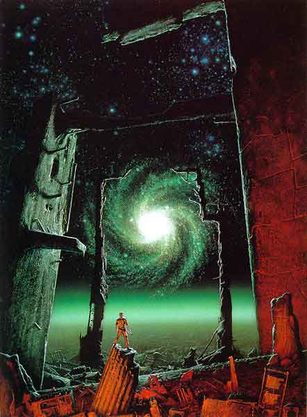
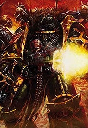
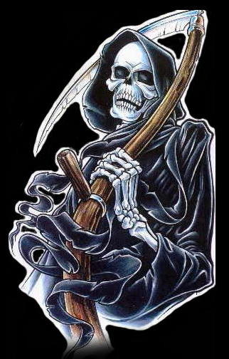
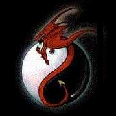
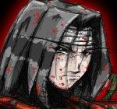
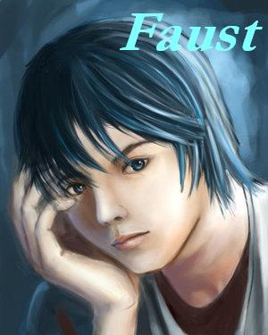
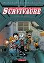
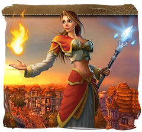

Forums galactiques > Taverne galactique : lieu de discussion informel > Célibataire ???
Célibataire (à la recherche de quelqu’un ) | 79 | |
Célibataire( ne veu pas changer) | 4 | |
Avec quelqu’un | 14 | |
Marier | 5 | |
Ca ne regarde que moi | 15 | |
Laisser se topique couler !(mauvaise idée) | 19 | |
Total : 136 vote(s) | ||
| trantor Réputation à la taverne : 47  12/01 ETU 20:19 | Score : 4 Détails Célibataire pour le moment, mais ça va pas durer...
Une de perdu 10 de retrouvé, donc je calcul 9 perdue, par 10, ça fait heuuu 90 !!! Ouahhh y'a quelqu'un qui vaudra bien m'aider ? Car avec une c'est déjà dur , alors avec 90 j'ose même pas imaginer ! | ||
| Lord Jonas 1er Réputation à la taverne : -1  12/01 ETU 21:13 | Score : 0 Détails Moi je suis aussi célib
| ||
| yong shi Réputation à la taverne : -7 12/01 ETU 21:15 | Score : 0 Détails avec quelqu'un
| ||
| delius Réputation à la taverne : 29  12/01 ETU 22:47 | Score : -5 Détails célibataire a le recherhe de quelqu'in (jeune célibataire cherche une meuf mortel ...) je déconne je deteste cette chanson remarquer le remix est plaisant ^^
| ||
| black bird Réputation à la taverne : 772 13/01 ETU 00:32 | Score : 1 Détails célibataire et fiére de l'étre....
ah...non...je crois méme pas a ce que je dis... je devrais plutot dire: Cherche désespérément ,personne de type féminin,pas trop petite ni trop grande,sachant faire la cuisine(nan...je rigole...humour....rien que de l'humour...^^) si personne intéressait,veuillez contacter le 06 26 48 .. .. merci... c'est bon j'ai fait ma petite annonce..^^ | ||
| KURT Réputation à la taverne : 377 13/01 ETU 00:41 | Score : 3 Détails je te conseille le telephone rose.^^
Tu trouveras sûrement ton âme seur^^ 0.80£ + côut de 5 SMS. | ||
| KiaX Réputation à la taverne : 178 13/01 ETU 01:59 | Score : 0 Détails Moi je dit ta pas besoin de sa ^^
| ||
| Azar Réputation à la taverne : 148  13/01 ETU 02:04 | Score : 0 Détails Célibataire et voudrais bien que ça change.
| ||
| Corbeau noir Réputation à la taverne : 1010  13/01 ETU 10:27  | Score : 7 Détails *Cela faisait quelques jours que Corbeau devait répondre à des insurections ou des attaques de la part de certains commandants méchants pas beau dont on se demande le nom(Non, non! Je ne dirais pas qui c'est!^^)
A chaque fin de journée, il se retrouvait chez lui seul. Enfin seul sentimentalement car de nombreuses personnes venaient à tout heure lui rapporte un ou deux rapports et certains de ces informateurs venaient lui demander les ordres en plein milieux de la nuit. Aujourd'hui, alors qu'il se baladait dans la taverne, il avait surpris cette conversation et intrigué par les propos de certains et surtout par le langue incompréhensible qu'ils parlaient(j'aime le language sms!), il s'approchat pile au moment où son meilleur ami de toujours, le commandant Essais venait de parler dans une phrase pleine de bon sens. Ne pouvant s'empécher de donner son opinion de Républicain démocrate chiant de toujours, il dit :* -Hey! Mais c'est pas bien ce que tu fais Essais! C'est pas gentil tout plein ca! Sinon, et ben c'est gentil de me demander ca! Je me sens seul quand je fais la cuisine alors je cherche belle et bien(cherchez le jeu de mot!^^) une femme! Quel genre de femme? Mais il n'y a pas de genre de femme mon cher ami!(C'était le commandant Essais qui venait de sortir cette phrase pleine de bons sens espérant ainsi lui refourger ca marchandise de robot gonflable^^) Chaque femme est unique! Bon, si jamais il y a des intéressées, vous savez où me trouver! *Sur ce, il retournat se balader dans la taverne à la recherche d'une conversation édifiante sur la nouvelle marque de shampoing galactique qui pourrait surement lui servir dans ses guerres...* | ||
| milena Réputation à la taverne : 0 13/01 ETU 13:19 | Score : 0 Détails JE vois qu'il manque cruelemant de femme celibatère !!!
| ||
| faust VIII Réputation à la taverne : 218  13/01 ETU 15:14 | Score : 2 Détails mon nom...haru?seul depuis environ...toujours
recherche femme -belle -intelligente -brune -1m73 -65kg -qui aime les lasagnes -qui n'aime pas le poisson -qui me trouve beau -qui me trouve fort -qui me complimentera 5 fois par minutes -qui se lave les dents je m'adreese a toi charmante demoiselle lisant cette annonce, si tu ne ressembla pas du tout à la description di-dessus, ne t'en fait pas, c'était de l'humour je recherche tout simplement une femme aussi belle de visage que d'âme avec laquelle je commencerais une relation durable remplie de poësies de fleurs et de papillons | ||
| Némésis Réputation à la taverne : 1252 13/01 ETU 15:32 | Score : 7 Détails /*/*/*/*/*/
.. le cdt Némésis ... hocha la tête ... ... non, décidément, ce n'était pas pour lui ... ... lui, ... mi-homme mi-Nécron ... machine cybernétique parcourue d'un fluide de régénération ... préfèrait ... la guerre ... ... bien que ses possibilités mécaniques soient largement supérieures à celles des humains , il n'en demeurait pas moins que l'essentiel ... dans le concept de "couple" ... avait été oublié ! ... et c'était là tout le drame de l'existence de ... Némésis ... /*/*/*/*/*/ | ||
| cdt max Réputation à la taverne : 0 13/01 ETU 17:58 | Score : 1 Détails je suis celibataire a la recherche de quelqu'un
| ||
| capitaine Bleuteun Réputation à la taverne : -16  13/01 ETU 18:25 | Score : 0 Détails célibataire...vive la liberté
| ||
| black bird Réputation à la taverne : 772 13/01 ETU 18:30 | Score : 0 Détails et vive l'ennui...^^
c'est ennuyeux d'étre célibataire la liberté sa va un moment mais aprés....^^ | ||
| Essai Réputation à la taverne : 389 13/01 ETU 20:21 | Score : 1 Détails Je vois que mon annonce a beaucoup de succès !!
J'ai déjà vendu par x-com pas moins de 10 jeunes femmes !! Donc pour les célibataires qui restent, je peux faire une promotion.. J'ai des femmes que j'ai enfermé en prison et qui sont très docile.... Je peux même en vendre deux pour le prix d'une !! Alors contactez moi par x-com si vous êtes intéressé ! :) | ||
| [*] Oblivion [*] Réputation à la taverne : 10  13/01 ETU 20:25 | Score : 0 Détails Et la liberté alors ?
Voyons essaie, vous me décevez ! Reprenez vous ! | ||
| Rendillion Réputation à la taverne : 675  14/01 ETU 14:11 | Score : 0 Détails Rendillion a longtemps crû que l'Amour, le vrai, allait être partagé avec Rosa.
Visiblement, la rapidité de revirement de celle ci prouvait bien qu'elle n'avait eu que peu de scrupules à se moquer de lui. Il était abattu,c'est vrai, d'avoir été trop gentil envers une personne qui se moquait éperdument de lui. Mais, la disparition probable de Arthérius lui avait montré les ravages de la solitude. La discussion avec Booster l'avait également mis sur la voie. Bien décidé à repartir d'un bon pied, il se dirigea vers la salle pour célibataires avec la ferme intention de trouver une partenaire pour une relation sans complexe mais une relation pleine de bonheur partagé. Arrivé sur place, il afficha une lettre: "Mesdames, si vous vous sentez seules et que vous cherchez un excellent parti, contactez moi et je serais ravi de vous montrer ce pourquoi vous m'avez contacté..." Satisfait, il repartit, s'attendant à être harcelé prochainement. | ||
| nounours1er Réputation à la taverne : 5 14/01 ETU 19:37 | Score : 0 Détails Je suis celibataire et a la recherche d' une diablesse ou ange.
| ||
| Felinia's return Réputation à la taverne : 354 14/01 ETU 20:19 | Score : 1 Détails Angely !!!!! Tu es où ?
|
Forums galactiques > Taverne galactique : lieu de discussion informel > Célibataire ???